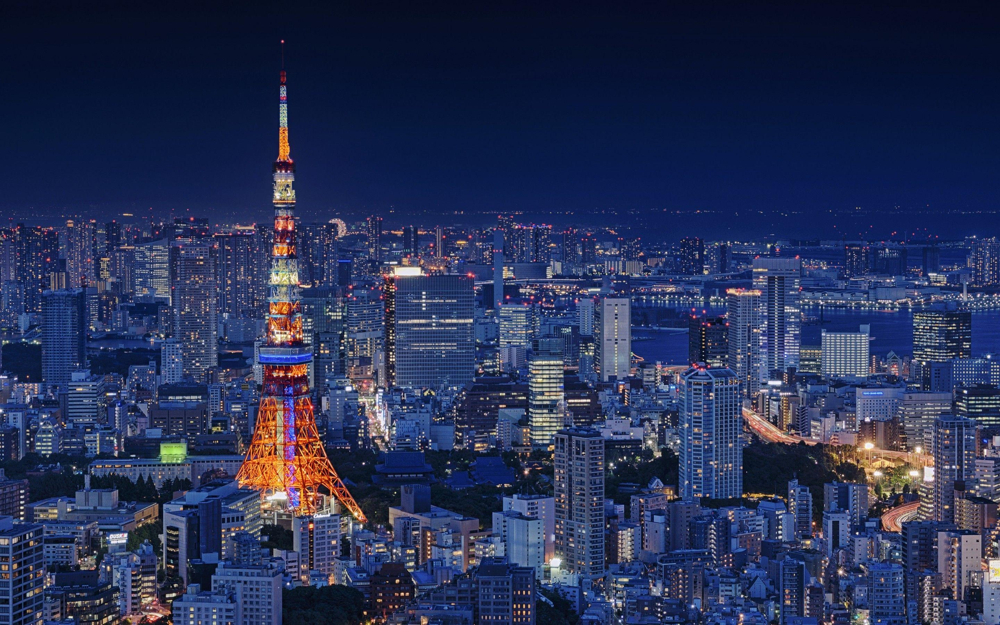
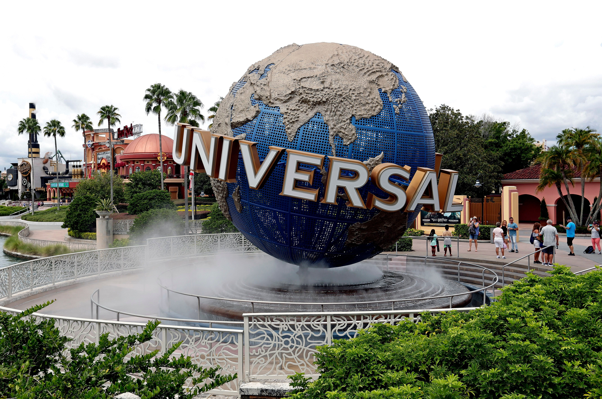
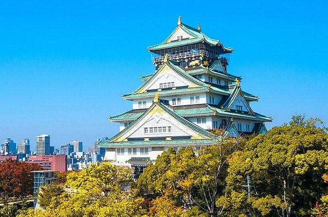
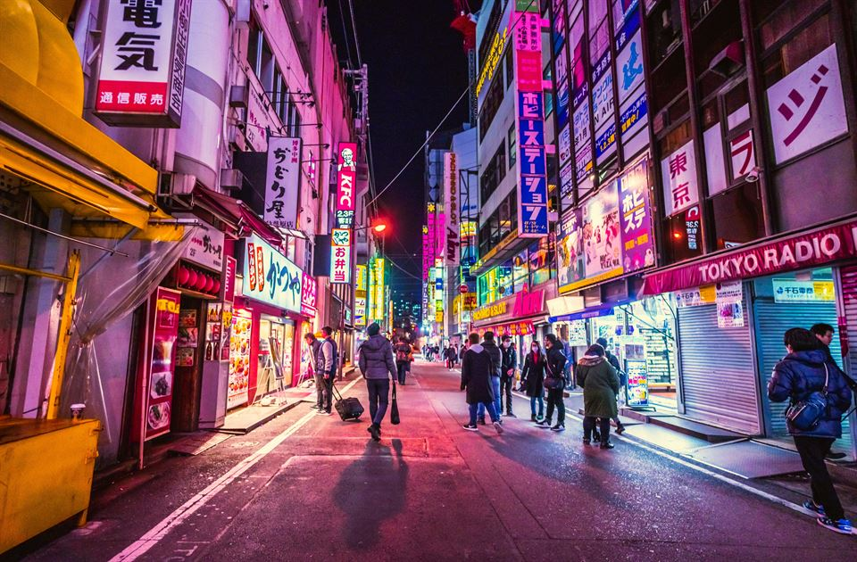
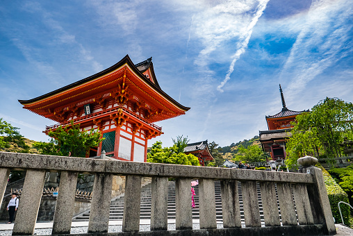
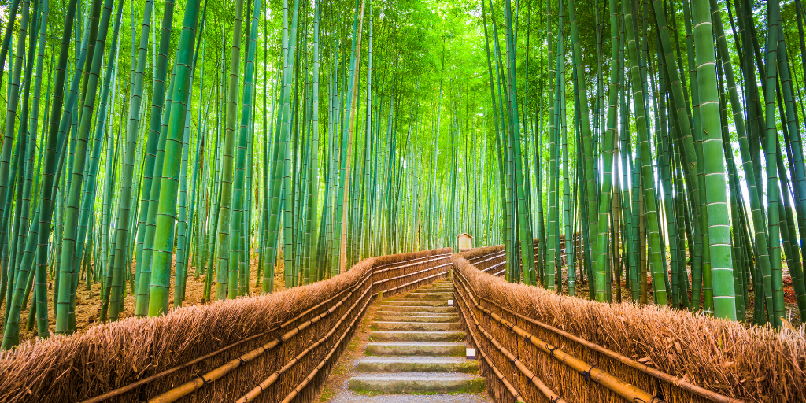

Itinerarios de Viaje
Conoce el plan de actividades de cada paquete.
PAQUETE 1
Aventura en Universal Studios
Día 1
Llegada a Tokio
- Recepción en el aeropuerto
- Traslado al hotel
- Tiempo libre para explorar la ciudad

Día 2
Universal Studios Japan
- Desayuno en el hotel
- Día completo en Universal Studios Japan
- Disfruta de sus atracciones y espectáculos

Día 3
Exploración de Osaka
- Visita a Dotonbori y zonas cercanas
- Tiempo libre para compras
- Regreso a Tokio por la tarde

PAQUETE 2
Tokio en las Alturas
Día 1
Descubriendo Tokio
- Llegada y traslado al hotel
- Visita a la Torre de Tokio
- Recorrido por la ciudad

Día 2
Shibuya y Shinjuku
- Desayuno en el hotel
- Visita al cruce de Shibuya
- Compras y paseo nocturno

Día 3
Vistas panorámicas
- Visita a un mirador
- Fotografías de Tokio
- Regreso al hotel

PAQUETE 3
Arte, Naturaleza y Paisajes
Día 1
Tradición en Kioto
- Visita a templos tradicionales
- Recorrido por calles históricas
- Degustación de comida japonesa

Día 2
Monte Fuji
- Visita al Parque Costero Hitachi
- Visita a Team Labs (Turno Nocturno)
- Fotografías del paisaje

Día 3
Bosque de bambú
- Visita al bosque de Arashiyama
- Tiempo libre para compras
- Traslado al aeropuerto
